5.5 Straight Line
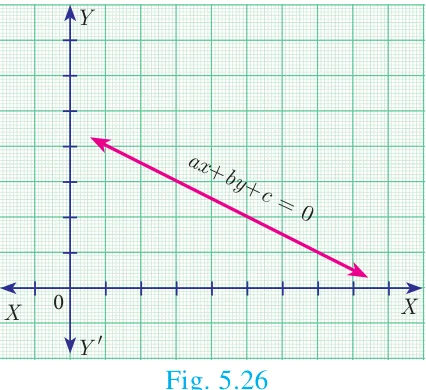
Any first degree equation in two variables \(x\) and \(y\) of the form \(ax + by + c = 0 \quad \ldots(1)\) where \(a\), \(b\), \(c\) are real numbers and at least one of \(a\), \(b\) is non-zero is called “Straight line” in \(XY\) plane.
5.5.1 Equation of coordinate axes
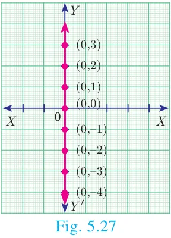
The \(X\) axis and \(Y\) axis together are called coordinate axes. The \(x\) coordinate of every point on \(OY\) (\(Y\) axis) is 0. Therefore equation of \(OY\) (\(Y\) axis) is \(x = 0\) (fig 5.27)
The \(y\) coordinate of every point on \(OX\) (\(X\) axis) is 0. Therefore the equation of \(OX\) (\(X\) axis) is \(y = 0\) (fig 5.28)
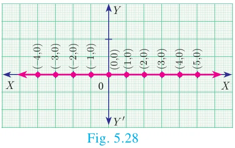
5.5.2 Equation of a straight line parallel to \(X\) axis
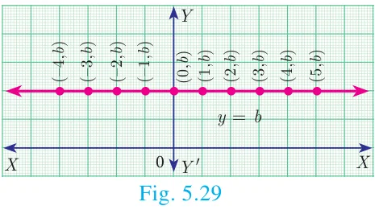
Let \(AB\) be a straight line parallel to \(X\) axis, which is at a distance ‘\(b\)’. Then \(y\) coordinate of every point on ‘\(AB\)’ is ‘\(b\)’. (fig 5.29)
Therefore, the equation of \(AB\) is \(y = b\)
Note
- If \(b > 0\), then the line \(y = b\) lies above the \(X\) axis
- If \(b < 0\), then the line \(y = b\) lies below the \(X\) axis
- If \(b = 0\), then the line \(y = b\) is the \(X\) axis itself.
5.5.3 Equation of a Straight line parallel to the \(Y\) axis
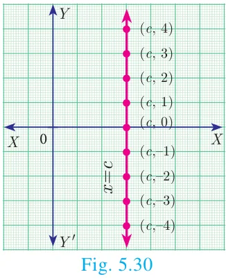
Let \(CD\) be a straight line parallel to \(Y\) axis, which is at a distance ‘\(c\)’. Then \(x\) coordinate of every point on \(CD\) is ‘\(c\)’. The equation of \(CD\) is \(x = c\). (fig 5.30)
Note
- If \(c > 0\), then the line \(x = c\) lies right to the side of the \(Y\) axis
- If \(c < 0\), then the line \(x = c\) lies left to the side of the \(Y\) axis
- If \(c = 0\), then the line \(x = c\) is the \(Y\) axis itself.
Example 5.17
Find the equation of a straight line passing through \((5, 7)\) and is (i) parallel to \(X\) axis (ii) parallel to \(Y\) axis.
Solution
(i) The equation of any straight line parallel to \(X\) axis is \(y = b\).
Since it passes through \((5, 7)\), \(b = 7\).
Therefore, the required equation of the line is \(y = 7\).
(ii) The equation of any straight line parallel to \(Y\) axis is \(x = c\)
Since it passes through \((5, 7)\), \(c = 5\)
Therefore, the required equation of the line is \(x = 5\).
5.5.4 Slope-Intercept Form
Every straight line that is not vertical will cut the \(Y\) axis at a single point. The \(y\) coordinate of this point is called \(y\) intercept of the line.
A line with slope \(m\) and \(y\) intercept \(c\) can be expressed through the equation \(y = mx + c\)
We call this equation as the slope-intercept form of the equation of a line.
Do you know?
- If a line with slope \(m\), \(m \neq 0\) makes \(x\) intercept \(d\), then the equation of the straight line is \(y = m(x - d)\).
- \(y = mx\) represent equation of a straight line with slope \(m\) and passing through the origin.
Example 5.18
Find the equation of a straight line whose
(i) Slope is 5 and \(y\) intercept is \(-9\) (ii) Inclination is \(45^\circ\) and \(y\) intercept is 11
Solution
(i) Given, Slope = 5, \(y\) intercept, \(c = -9\)
Therefore, equation of a straight line is \(y = mx + c\)
\(y = 5x - 9 \Rightarrow 5x - y - 9 = 0\)
(ii) Given, \(\theta = 45^\circ\), \(y\) intercept, \(c = 11\)
\(\text{Slope } m = \tan\theta = \tan 45^\circ = 1\)
Therefore, equation of a straight line is of the form \(y = mx + c\)
\(\text{Hence we get, } y = x + 11 \Rightarrow x - y + 11 = 0\)
Example 5.19
Calculate the slope and \(y\) intercept of the straight line \(8x - 7y + 6 = 0\)
Solution
Equation of the given straight line is \(8x - 7y + 6 = 0\)
\(7y = 8x + 6 \quad (\text{bringing it to the form } y = mx + c)\)
\(y = \dfrac{8}{7}x + \dfrac{6}{7} \quad \ldots(1)\)
Comparing (1) with \(y = mx + c\)
\(\text{Slope } m = \dfrac{8}{7} \text{ and } y \text{ intercept } c = \dfrac{6}{7}\)
Do you know?
For, the point \((x, y)\) in a \(xy\) plane, the \(x\) coordinate \(x\) is called “Abscissae” and the \(y\) coordinate \(y\) is called “Ordinate”.
Example 5.20
The graph relates temperatures \(y\) (in Fahrenheit degree) to temperatures \(x\) (in Celsius degree) (a) Find the slope and \(y\) intercept (b) Write an equation of the line (c) What is the mean temperature of the earth in Fahrenheit degree if its mean temperature is \(25^\circ\) Celsius?
Solution
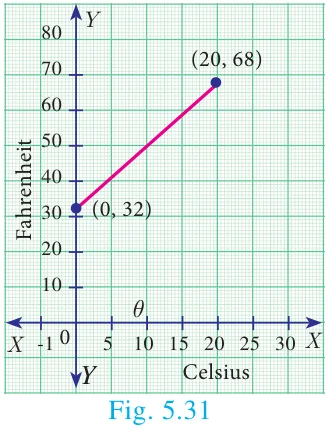
(a) From the figure, \(\text{slope} = \dfrac{\text{change in } y \text{ coordinate}}{\text{change in } x \text{ coordinate}} = \dfrac{68 - 32}{20 - 0} = \dfrac{36}{20} = \dfrac{9}{5} = 1.8\)
The line crosses the \(Y\) axis at \((0, 32)\)
So the slope is \(\dfrac{9}{5}\) and \(y\) intercept is 32.
(b) Use the slope and \(y\) intercept to write an equation
The equation is \(y = \dfrac{9}{5}x + 32\)
(c) In Celsius, the mean temperature of the earth is \(25^\circ\). To find the mean temperature in Fahrenheit, we find the value of \(y\) when \(x = 25\)
\(y = \dfrac{9}{5}x + 32\)
\(y = \dfrac{9}{5}(25) + 32\)
\(y = 77\)
Therefore, the mean temperature of the earth is \(77^\circ\) F.
Note
The formula for converting Celsius to Fahrenheit is given by \(F = \dfrac{9}{5}C + 32\), which is the linear equation representing a straight line derived in the example.
5.5.5 Point-Slope form
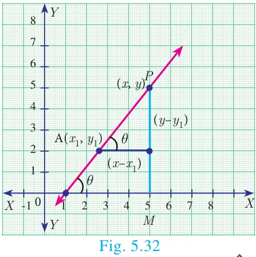
Here we will find the equation of a straight line passing through a given point \(A(x_1, y_1)\) and having the slope \(m\).
Let \(P(x, y)\) be any point other than \(A\) on the given line. Slope of the line joining \(A(x_1, y_1)\) and \(P(x, y)\) is given by
\(m = \tan\theta = \dfrac{y - y_1}{x - x_1}\)
Therefore, the equation of the required line is \(y - y_1 = m(x - x_1)\) (Point slope form)
Thinking Corner
Is it possible to express, the equation of a straight line in slope-intercept form, when it is parallel to \(Y\) axis?
Example 5.21
Find the equation of a line passing through the point \((3, -4)\) and having slope \(\dfrac{-5}{7}\)
Solution
Given, \((x_1, y_1) = (3, -4)\) and \(m = \dfrac{-5}{7}\)
The equation of the point-slope form of the straight line is \(y - y_1 = m(x - x_1)\)
\(\text{we write it as } y + 4 = -\dfrac{5}{7}(x - 3)\)
\(\Rightarrow 5x + 7y + 13 = 0\)
Example 5.22
Find the equation of a line passing through the point \(A(1, 4)\) and perpendicular to the line joining points \((2, 5)\) and \((4, 7)\).
Solution
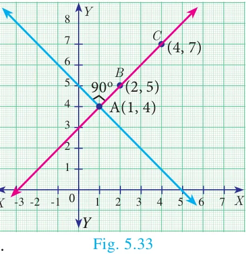
Let the given points be \(A(1, 4)\), \(B(2, 5)\) and \(C(4, 7)\).
\(\text{Slope of line } BC = \dfrac{7 - 5}{4 - 2} = \dfrac{2}{2} = 1\)
Let \(m\) be the slope of the required line.
Since the required line is perpendicular to \(BC\),
\(m \times 1 = -1\)
\(m = -1\)
The required line also pass through the point \(A(1, 4)\).
The equation of the required straight line is \(y - y_1 = m(x - x_1)\)
\(y - 4 = -1(x - 1)\)
\(y - 4 = -x + 1\)
\(\text{we get, } x + y - 5 = 0\)
5.5.6 Two Point form
Let \(A(x_1, y_1)\) and \(B(x_2, y_2)\) be two given distinct points. Slope of the straight line passing through these points is given by \(m = \dfrac{y_2 - y_1}{x_2 - x_1}\), \((x_2 \neq x_1)\).
From the equation of the straight line in point slope form, we get
\(y - y_1 = \dfrac{y_2 - y_1}{x_2 - x_1}(x - x_1)\)
\(\text{Hence, } \dfrac{y - y_1}{y_2 - y_1} = \dfrac{x - x_1}{x_2 - x_1} \quad (\text{is the equation of the line in two-point form})\)
Example 5.23
Find the equation of a straight line passing through \((5, -3)\) and \((7, -4)\).
Solution
The equation of a straight line passing through the two points \((x_1, y_1)\) and \((x_2, y_2)\) is
\(\dfrac{y - y_1}{y_2 - y_1} = \dfrac{x - x_1}{x_2 - x_1}\)
Substituting the points we get,
\(\dfrac{y + 3}{-4 + 3} = \dfrac{x - 5}{7 - 5}\)
\(\Rightarrow 2y + 6 = -x + 5\)
\(\text{Therefore, } x + 2y + 1 = 0\)
Do you know?
The great mathematical physicists like Galileo and Newton used coordinate geometry to characterize the motions of objects in plane and space.
Example 5.24
Two buildings of different heights are located at opposite sides of each other. If a heavy rod is attached joining the terrace of the buildings from \((6, 10)\) to \((14, 12)\), find the equation of the rod joining the buildings ?
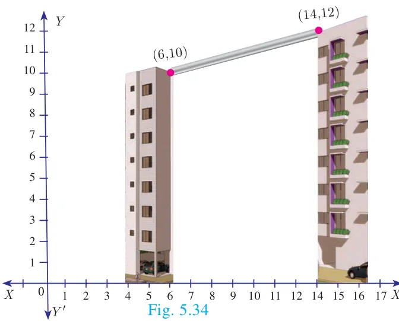
Solution
Let \(A(6, 10)\), \(B(14, 12)\) be the points denoting the terrace of the buildings.
The equation of the rod is the equation of the straight line passing through \(A(6, 10)\) and \(B(14, 12)\)
\(\dfrac{y - y_1}{y_2 - y_1} = \dfrac{x - x_1}{x_2 - x_1} \quad \text{gives} \quad \dfrac{y - 10}{12 - 10} = \dfrac{x - 6}{14 - 6}\)
\(\dfrac{y - 10}{2} = \dfrac{x - 6}{8}\)
\(\text{Therefore, } x - 4y + 34 = 0\)
Hence, equation of the rod is \(x - 4y + 34 = 0\)
5.5.7 Intercept Form
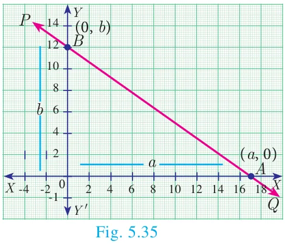
We will find the equation of a line whose intercepts are \(a\) and \(b\) on the coordinate axes respectively.
Let \(PQ\) be a line meeting \(X\) axis at \(A\) and \(Y\) axis at \(B\). Let \(OA = a\), \(OB = b\). Then the coordinates of \(A\) and \(B\) are \((a, 0)\) and \((0, b)\) respectively. Therefore, the equation of the line joining \(A\) and \(B\) is
\(\dfrac{y - 0}{b - 0} = \dfrac{x - a}{0 - a} \quad \text{we get,} \quad \dfrac{y}{b} = \dfrac{x - a}{-a} \quad \text{gives} \quad \dfrac{y}{b} = \dfrac{-x}{a} + 1\)
\(\text{Hence, } \dfrac{x}{a} + \dfrac{y}{b} = 1 \quad (\text{Intercept form of a line})\)
Progress Check
Fill the details in respective boxes
| Form | When to use? | Name |
|---|---|---|
| \(y = mx + c\) | Slope \(= m\), Intercept \(= c\) are given | |
| \(\dfrac{y - y_1}{y_2 - y_1} = \dfrac{x - x_1}{x_2 - x_1}\) | ||
| The intercepts are given | Intercept form |
Example 5.25
Find the equation of a line which passes through \((5, 7)\) and makes intercepts on the axes equal in magnitude but opposite in sign.
Solution
Let the \(x\) intercept be ‘\(a\)’ and \(y\) intercept be ‘\(-a\)’.
The equation of the line in intercept form is \(\dfrac{x}{a} + \dfrac{y}{b} = 1\)
\(\Rightarrow \dfrac{x}{a} + \dfrac{y}{-a} = 1 \quad (\text{Here } b = -a)\)
\(\therefore x - y = a\,. \qquad \ldots(1)\)
Since (1) passes through \((5, 7)\)
\(\text{Therefore, } 5 - 7 = a \Rightarrow a = -2\)
Thus the required equation of the straight line is \(x - y = -2\); or \(x - y + 2 = 0\)
Example 5.26
Find the intercepts made by the line \(4x - 9y + 36 = 0\) on the coordinate axes.
Solution
Equation of the given line is \(4x - 9y + 36 = 0\)
\(\text{we write it as } 4x - 9y = -36 \quad (\text{bringing it to the normal form})\)
\(\text{Dividing by } -36 \text{ we get, } \dfrac{x}{-9} + \dfrac{y}{4} = 1 \qquad \ldots(1)\)
Comparing (1) with intercept form, we get \(x\) intercept \(a = -9\); \(y\) intercept \(b = 4\)
Example 5.27
A mobile phone is put to use when the battery power is 100%. The percent of battery power ‘\(y\)’ (in decimal) remaining after using the mobile phone for \(x\) hours is assumed as \(y = -0.25x + 1\)
- Find the number of hours elapsed if the battery power is 40%.
- How much time does it take so that the battery has no power?
Solution
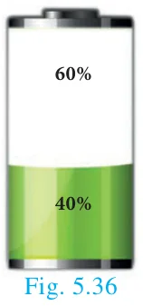
(i) To find the time when the battery power is 40%, we have to take \(y = 0.40\)
\(0.40 = -0.25x + 1 \Rightarrow 0.25x = 0.60\)
\(\text{we get, } x = \dfrac{0.60}{0.25} = 2.4 \text{ hours.}\)
(ii) If the battery power is 0 then \(y = 0\)
\(\text{Therefore, } 0 = -0.25x + 1 \text{ gives } 0.25x = 1 \text{ hence } x = 4 \text{ hours.}\)
Thus, after 4 hours, the battery of the mobile phone will have no power.
Example 5.28
A line makes positive intercepts on coordinate axes whose sum is 7 and it passes through \((-3, 8)\). Find its equation.
Solution
If \(a\) and \(b\) are the intercepts then \(a + b = 7\) or \(b = 7 - a\)
\(\text{By intercept form } \dfrac{x}{a} + \dfrac{y}{b} = 1\)
\(\text{We have } \dfrac{x}{a} + \dfrac{y}{7 - a} = 1\)
As this line pass through the point \((-3, 8)\), we have
\(\dfrac{-3}{a} + \dfrac{8}{7 - a} = 1 \Rightarrow -3(7 - a) + 8a = a(7 - a)\)
\(-21 + 3a + 8a = 7a - a^2\)
\(\text{So, } a^2 + 4a - 21 = 0\)
Solving this equation \((a - 3)(a + 7) = 0\)
\(a = 3 \text{ or } a = -7\)
Since \(a\) is positive, we have \(a = 3\) and \(b = 7 - a = 7 - 3 = 4\).
\(\text{Hence } \dfrac{x}{3} + \dfrac{y}{4} = 1\)
Therefore, \(4x + 3y - 12 = 0\) is the required equation.
Example 5.29
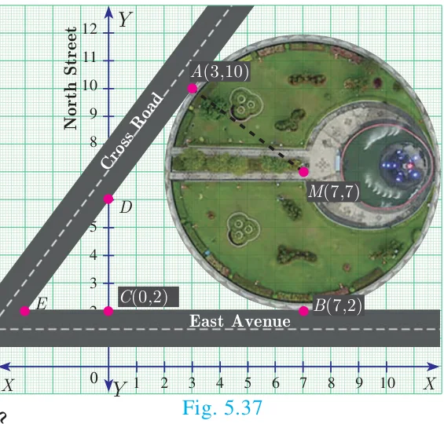
A circular garden is bounded by East Avenue and Cross Road. Cross Road intersects North Street at \(D\) and East Avenue at \(E\). \(AD\) is tangential to the circular garden at \(A(3, 10)\). Using the figure.
- Find the equation of
- East Avenue.
- North Street
- Cross Road
- Where does the Cross Road intersect?
- North Street
- East Avenue
Solution
(a) (i) East Avenue is the straight line joining \(C(0, 2)\) and \(B(7, 2)\). Thus the equation of East Avenue is obtained by using two-point form which is
\(\dfrac{y - 2}{2 - 2} = \dfrac{x - 0}{7 - 0}\)
\(\dfrac{y - 2}{0} = \dfrac{x}{7} \Rightarrow y = 2\)
(ii) Since the point \(D\) lie vertically above \(C(0, 2)\). The \(x\) coordinate of \(D\) is 0.
Since any point on North Street has \(x\) coordinate value 0.
The equation of North Street is \(x = 0\)
(iii) To find equation of Cross Road.
Center of circular garden \(M\) is at \((7, 7)\), \(A\) is \((3, 10)\)
We first find slope of \(MA\), which we call \(m_1\)
\(\text{Thus } m_1 = \dfrac{10 - 7}{3 - 7} = \dfrac{-3}{4}.\)
Since the Cross Road is perpendicular to MA, if \(m_2\) is the slope of the Cross Road then, \(m_1m_2 = -1\) gives \(\dfrac{-3}{4}m_2 = -1\) so \(m_2 = \dfrac{4}{3}\).
Now, the cross road has slope \(\dfrac{4}{3}\) and it passes through the point \(A(3, 10)\).
\(\text{The equation of the Cross Road is } y - 10 = \dfrac{4}{3}(x - 3)\)
\(3y - 30 = 4x - 12\)
\(\text{Hence, } 4x - 3y + 18 = 0\)
(b) (i) If \(D\) is \((0, k)\) then \(D\) is a point on the Cross Road.
Therefore, substituting \(x = 0\), \(y = k\) in the equation of Cross Road,
\(\text{we get, } 0 - 3k + 18 = 0\)
\(\text{Value of } k = 6\)
Therefore, \(D\) is \((0, 6)\)
(ii) To find \(E\), let \(E\) be \((q, 2)\)
Put \(y = 2\) in the equation of the Cross Road,
\(\text{we get, } 4q - 6 + 18 = 0\)
\(4q = -12 \text{ gives } q = -3\)
Therefore, The point \(E\) is \((-3, 2)\)
Thus the Cross Road meets the North Street at \(D(0, 6)\) and East Avenue at E \((-3, 2)\).
Progress Check
Fill the details in respective boxes
| S.No. | Equation | Slope | \(x\) intercept | \(y\) intercept |
|---|---|---|---|---|
| 1 | \(3x - 4y + 2 = 0\) | |||
| 2 | \(y = 14x\) | 0 | ||
| 3 | 2 | \(-3\) |
Activity 4
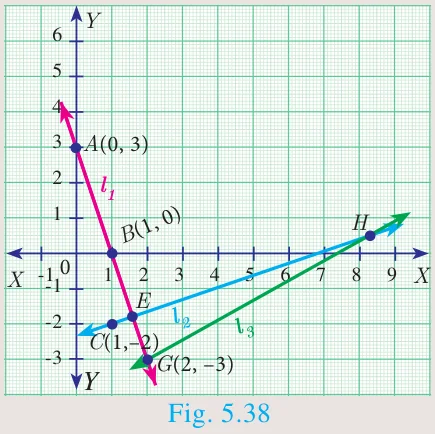
If line \(l_1\) is perpendicular to line \(l_2\) and line \(l_3\) has slope 3 then
- find the equation of line \(l_1\)
- find the equation of line \(l_2\)
- find the equation of line \(l_3\)
Activity 5
A ladder is placed against a vertical wall with its foot touching the horizontal floor. Find the equation of the ladder under the following conditions.
| No. | Condition | Picture | Equation of the ladder |
|---|---|---|---|
| (i) | The ladder is inclined at \(60^\circ\) to the floor and it touches the wall at \((0, 8)\) | 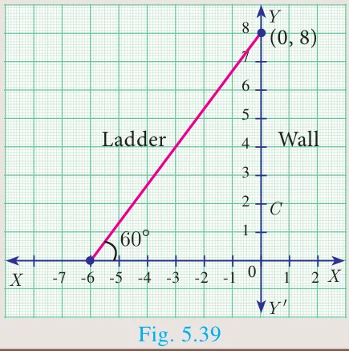 | \(\underline{\qquad\qquad}\) |
| (ii) | The foot and top of the ladder are at the points \((2, 4)\) and \((5, 1)\) | \(\underline{\qquad\qquad}\) | \(\underline{\qquad\qquad}\) |